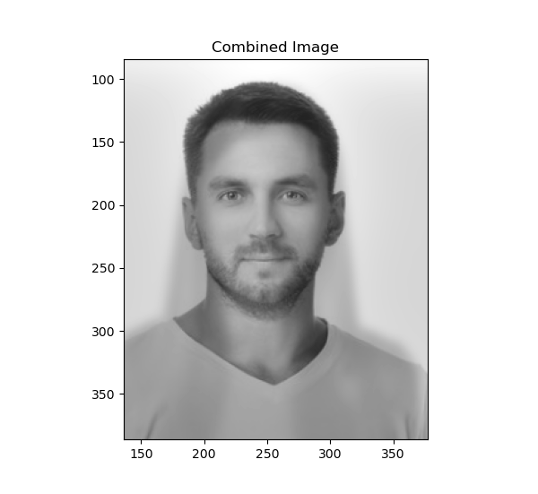

Below is the original cameraman image.
Here is result of the image convolved with the finite difference operators D_x and D_y.
Below is the graident magnitude image
I then binarized this magnitude image by taking a threshold of greater than 79 pixel intensity to saturate to 255 and the rest to go to 0. This threshold was set qualitatively in order to suppress false postive edges. Below is the result of this binarization.

A blurry image was created by convolving the original image with the gaussian kernel that was generated using cv2.getGaussianKernel(). Below is the blurry image.
The process mentioned in Part 1.1 was then repeated with this gaussian blurred image. Below is the resulting image.
The differences are quite prominent where the edges are easily detected and more visible. The edges are also thicker and bolder.
Next, the operation was combined into 1 singular convolution. The gaussian was convolved with D_x and D_y. The resulting filter is displayed as an image below.
The same result is gotten as above with the the magnitude image generated as shown below.In this part, a sharpening filter was generated and convolved with the image of interest to get a sharpened image. The sharpening filter was generated by taking the impluse filter minus a gaussian filter, multiplying that result by some multiple and then adding the impulse filter. Using this filter under different multiplicative factors lead to results shown below.
It was noticed that as the number of high Frequency signals were added to the image, it appeared sharper with the edges being more prominent. For evaluation, a sharp image was blurred with sigma set to 2 and then that blurred image was sharped to get the original image. Below is the result.
Using the idea of different Frequencies that our eyes are sensitive to, we can overlay images filteered at differing frequencies.
Here is the same FFT magnitude plot but after filtering the images.
Here is the FFt magnitude of the hybrid image.
Here is the hybrid image of Derek and nutmeg.

From close, it is einstein but from far it is schrodinger.
Another interesting example I created is where you can see a change in expression. From close, it looks like the woman is angry but from afar, she appears not angry. Below is the input images.

Here is an example of the hybrid image not working. In this case, the frequencies in both input were very similar therefore, it is not possible to distinguish the 2 images. It is supposed to be a man in close and a woman from afar.
From analysing the FFT spectrum, it was seen that the dominant frequencies between the images were very close and were not filtered out which is why the hybrid image failed.
Gaussian and laplacian stacks were implemented from scratch. The visualization below shows the laplacian stack at various levels. The top most row is the first level with lots of high frequency features. The left column is the apple, middle column is the orange and the right column is the combination of the 2 images.
The "oraple" was created using a vertical seam. I then tried out various filters such as a horizontal seam and an irregular filter too. I created a function that takes in an image and generates a binary filter from its edges. That way, irregular shaped filters can be created with interesting results.
Firstly, using a vertical seam, I blended 2 images of tahoe to create one super image. Below are the raw images.
Below is the combined image.
Using a horizontal seam, I blended an image of an airplane with another image of tahoe. Here are the raw images.
Below is the result.
Finally, here are the results of the irregular mask. First, an image of an eye is taken and made a filter. Below is the original eye image.
Below is the filter that was automatically generated from my function - createmask.
I then applied that filter to the image of tahoe and the eye shown below.
Here are the reuslts of the irregular eye filter. I also inverted the tahoe image to create a cool effect of looking through the lens of another person and the inversion of color is like a memory.
Here are some other interesting blends. Enjoy!